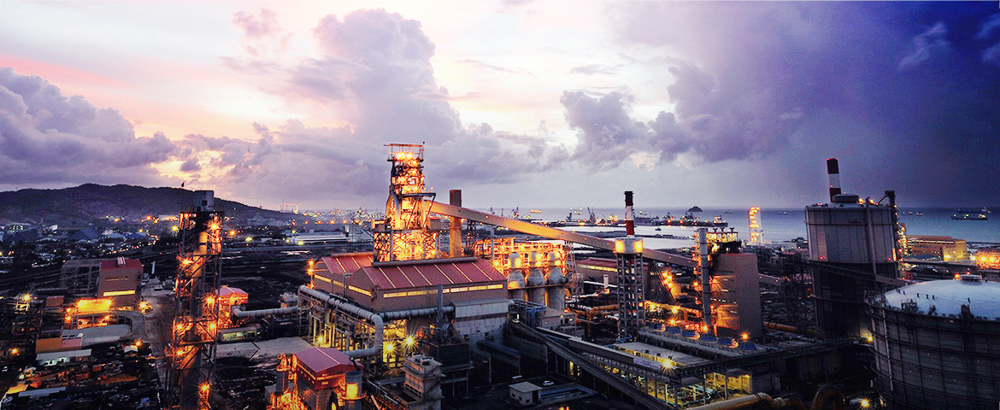
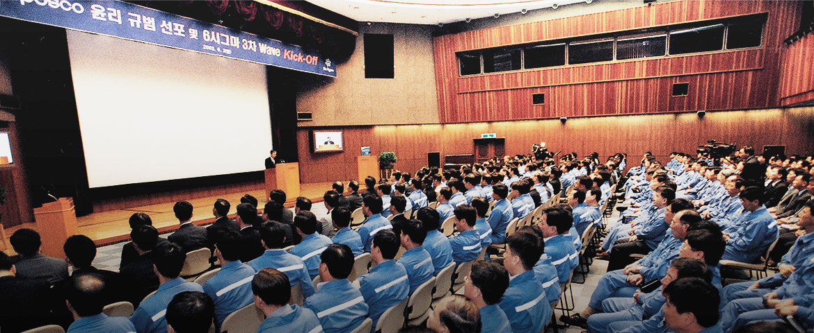
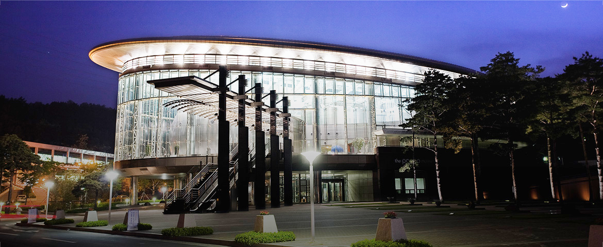
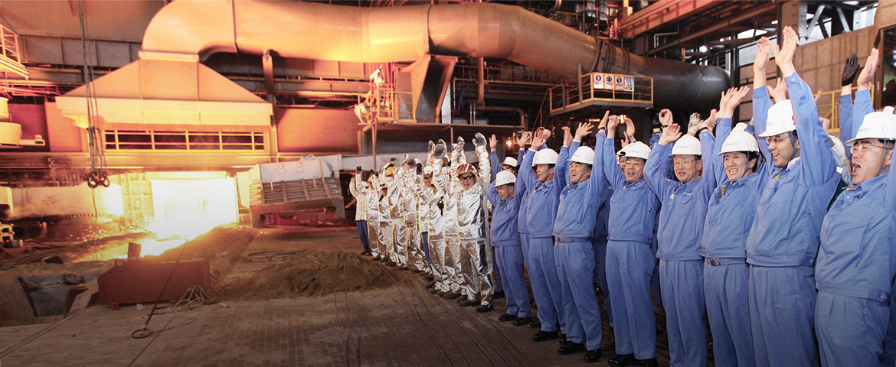
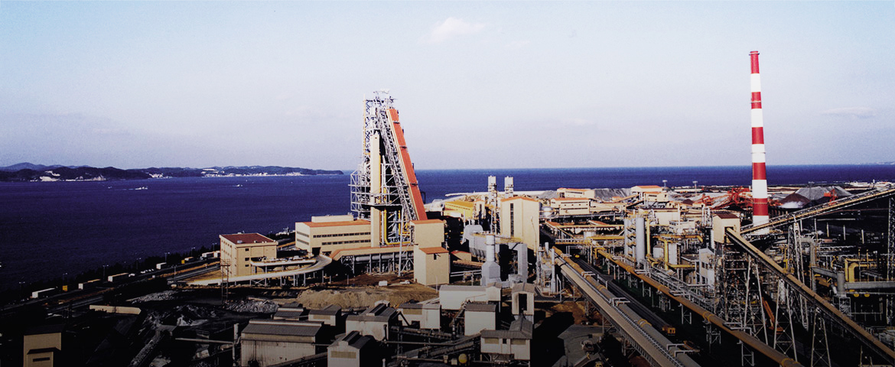
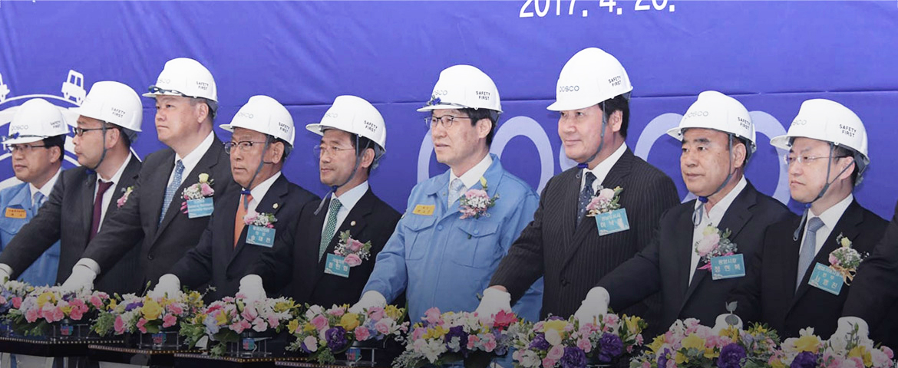
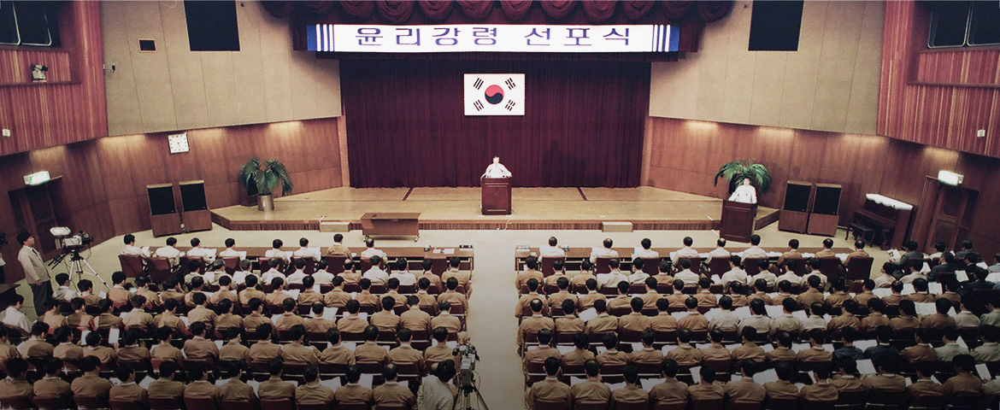
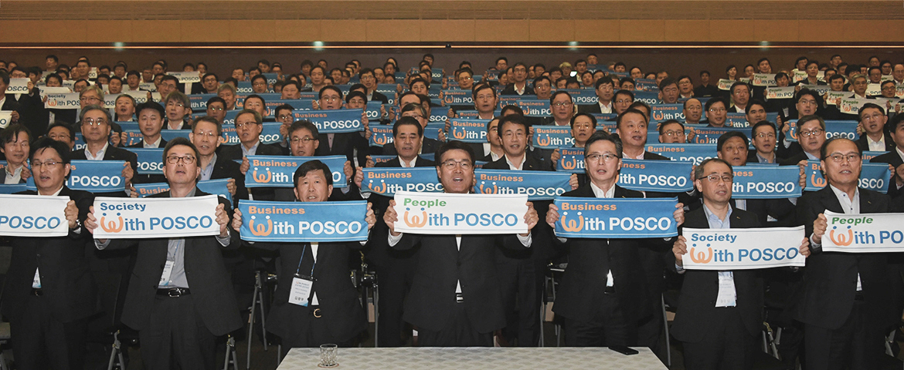

주요연혁
함께 만들어 온, 함께 만들어 갈 미래
제철보국의 신념을 바탕으로 묵묵히 50년을 걸어온 포스코의 발자취를 소개합니다.2000 ~ 현재
- 2021
- 03
이희근 대표이사 취임
- 2019
- 03
민중기 대표이사 취임
- 2016
- 03
포스코 FeMn(페로망간)공장 위탁운영 용역계약 체결
- 2015
- 07
이희명 대표이사 취임
- 2014
- 03
이경목 대표이사 취임
- 2013
- 04
인도네시아 AI 탈산제/합금공장 준공
- 01
나인디지트, 리코금속 흡수합병 및 도시관상부문 신설
- 
- 2012
- 09
영월 Mo 습시갈황 공장 준공
- 06
포스코 Mg 제련공장 위탁운영 용역계약 체결
- 01
고순도 알루미나 합작법인 포스하이알 설립 (KC와 합작투자)
- 2011
- 04
폐자원 회수 및 1차 가공 전문 도시광산업체 ㈜리코금속 인수
- 03
회사 상호 변경 ㈜포스코엠텍
- 2010
- 08
본사 신사옥 준공 (효자동)
- 10
유상증자 실시 및 지배구조 개선
- 04
도시광산 전문업체 ㈜나인디지트 인수
- 03
윤용철 대표이사 취임
- 2009
- 12
노사상생협력 유공자 포상 국무총리 표창 수상
- 12
POSCO IF 2009 혁신 최우수 수상
- 04
노동부장관상 노사한누리상 수상
- 03
ABB코리아와 전략적 제휴 (MOU) 체결
- 01
세계 최초 철강제품 포장로봇 결속기 개발 (POSCO StrapMaster)
- 2008
- 07
포스코-베트남과 철광제품 포장사업 MOU 체결
- 02
미국 올리브덴 광산 개발 참여
- 
- 2007
- 12
노사문화 대기업부문 대상 수상
- 09
4조 2교대 전면시행
- 05
자동설비 개발센터 준공, 페로-물리 제품 유럽 시장 첫 공급
- 02
강판도금용 AI 주조설비 준공
- 2006
- 12
봉사활동 유공 대통령상 표창, 뉴페러다임 최우수 실천기업 선정
- 11
신303(신)근무제도 도입 (4조 3교대제 도입), 인적자원개발 우수기관(Best HRD) 인증패 수상
- 2005
- 12
정품 S/W사용 모범기업수상(경북체신청장)
- 07
POSCO 기업집단편입
- 02
제 17회 보람의 일터 대상 대기업부문 우수상 수상
- 
- 2003
- 12
2003년도 신노사 문화대상(大嘗)기업선정, 국무총리상 수상
- 2001
- 03
회사 상호변경 '주식회사 삼정피앤에이'
1990 ~ 1999
- 1999
- 07
광양 1열연 포장라인 결속기 합리화 준공
- 
- 1998
- 07
Coil Master license 획득
- 1997
- 11
코스닥시장 등록
- 1996
- 08
한국엔지니어링진흥협회 등록
- 04
포항 본사사옥 준공(괴동동)
- 
- 1995
- 12
ISO 9001 인증 획득
- 1991
- 04
재생 알미늄공장 확장 준공 (포항철강산업단지 2공단 내)
- 01
광양 2냉연 자동포장설비 준공
1980 ~ 1989
- 1989
- 01
광양 1냉연 자동포장설비 준공
- 
- 1988
- 10
광양사업소 가공공장 준공
- 1987
- 02
포항 2냉연공장 자동포장설비 준공
- 1986
- 04
광양제철소 외주업체 지정
- 1984
- 05
알미늄공장 연속주조설비 준공
1970 ~ 1979
- 1978
- 06
포장재료(철재, 목재, 지재) 가공공장 준공
- 1977
- 05
알미늄공장 준공 (제강용 AI 탈산제 공급)
- 
- 1976
- 02
POSCO 외주업체 지정
- 1974
- 04
포항철강공업관리공단 입주
- 1973
- 12
삼정강업주식회사 설립
- 